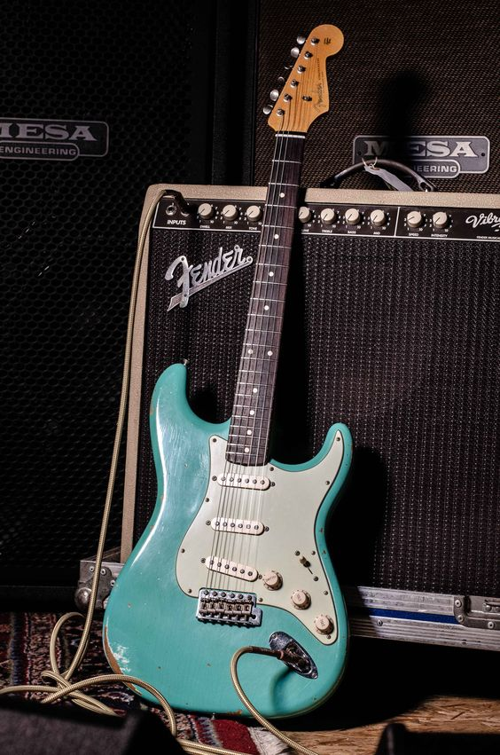
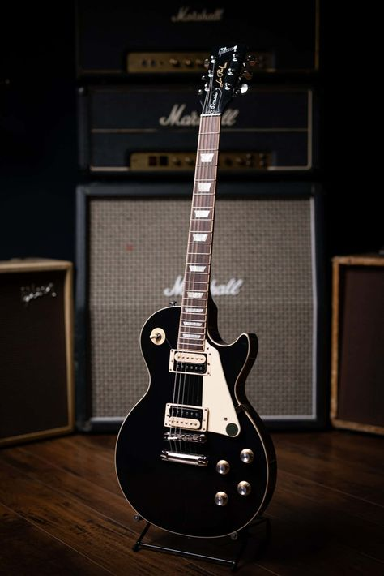
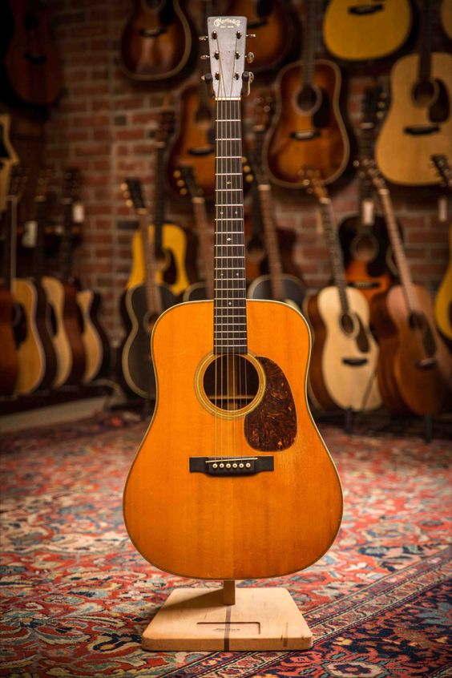

Gitar Elektrik
-
Fender Stratocaster
photo by pinterest Fender Stratocaster adalah gitar listrik ikonik yang dirancang oleh Leo Fender, dikenal dengan desain double-cutaway, tiga pickup single-coil, dan pengaruh besar dalam sejarah musik, digunakan oleh banyak musisi terkenal.
-
Gibson Les Paul
photo by pinterest Gibson Les Paul adalah gitar listrik ikonik yang diperkenalkan pada tahun 1952 oleh Les Paul dan Gibson, dikenal karena bodi solidnya yang terbuat dari mahoni dan maple, pickup humbucker yang memberikan suara kaya dan sustain panjang, serta pengaruhnya yang besar dalam berbagai genre musik, digunakan oleh banyak gitaris legendaris seperti Jimmy Page dan Slash, dengan berbagai model dan variasi yang terus diproduksi hingga saat ini.
Gitar Akustik
-
Martin D-28
photo by pinterest Martin D-28 adalah gitar akustik ikonik yang diperkenalkan pada tahun 1931 oleh C.F. Martin & Company, terkenal dengan bodi dreadnought, kombinasi bahan sitka spruce dan rosewood yang memberikan suara seimbang dengan bass dalam dan treble cerah, serta digunakan oleh banyak musisi legendaris seperti Johnny Cash dan Eric Clapton.
-
Gibson J-45

photo by pinterest Gibson J-45 adalah gitar akustik dreadnought yang diperkenalkan pada tahun 1942, dikenal sebagai "Workhorse" karena suara yang kaya dan seimbang, bodi yang terbuat dari sitka spruce dan mahoni, serta sering digunakan oleh musisi terkenal seperti Bob Dylan dan Bruce Springsteen, menjadikannya salah satu model paling populer dalam sejarah gitar.
Gitar Bass
-
Fender Precision Bass

photo by pinterest Fender Precision Bass adalah gitar bass listrik yang diperkenalkan pada tahun 1951 dan dikenal sebagai salah satu bass paling ikonik dalam sejarah musik, dengan desain bodi yang ergonomis, pickup split-coil yang memberikan suara yang kuat dan punchy, serta menjadi pilihan utama bagi banyak musisi di berbagai genre, termasuk rock, jazz, dan funk.
-
Music Man StingRay

photo by pinterest Music Man StingRay adalah gitar bass listrik yang diluncurkan pada tahun 1976, terkenal dengan desain bodi yang ergonomis, pickup humbucker yang menghasilkan suara yang kaya dan punchy, serta sistem kontrol EQ yang inovatif, menjadikannya pilihan favorit di kalangan musisi profesional di berbagai genre, terutama funk dan rock.